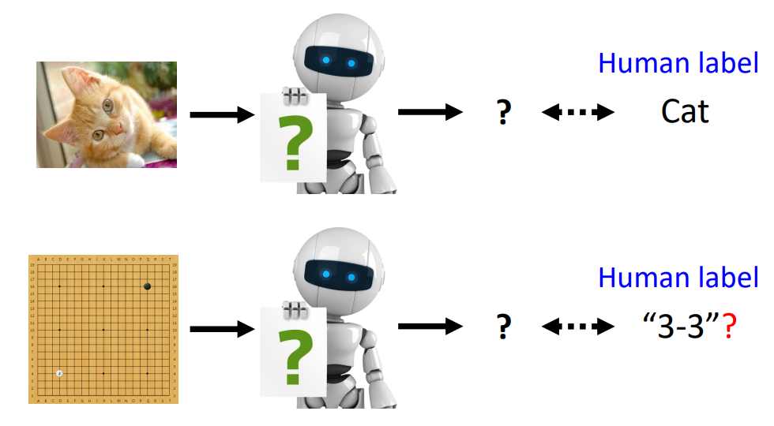
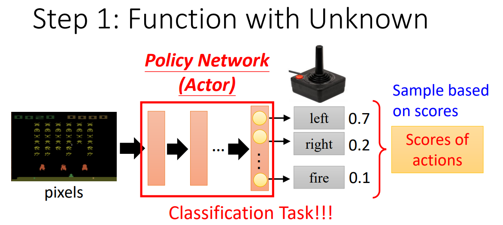
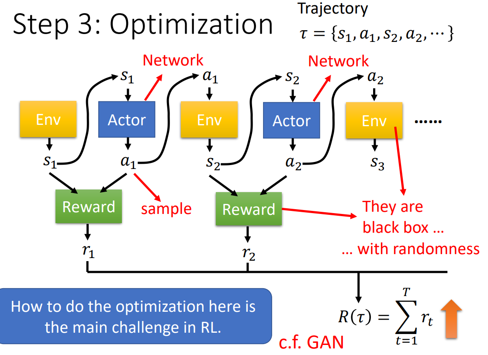
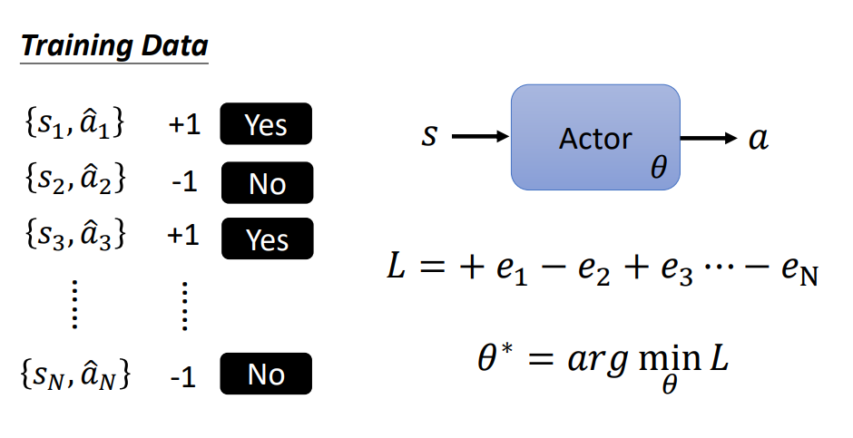
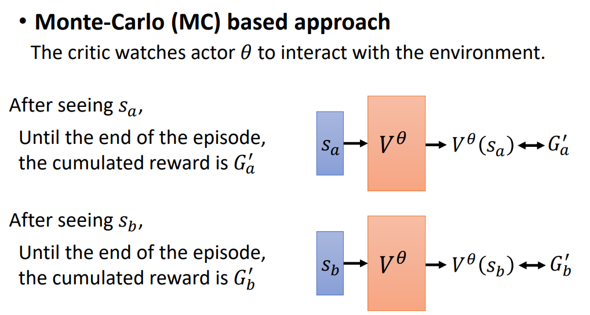
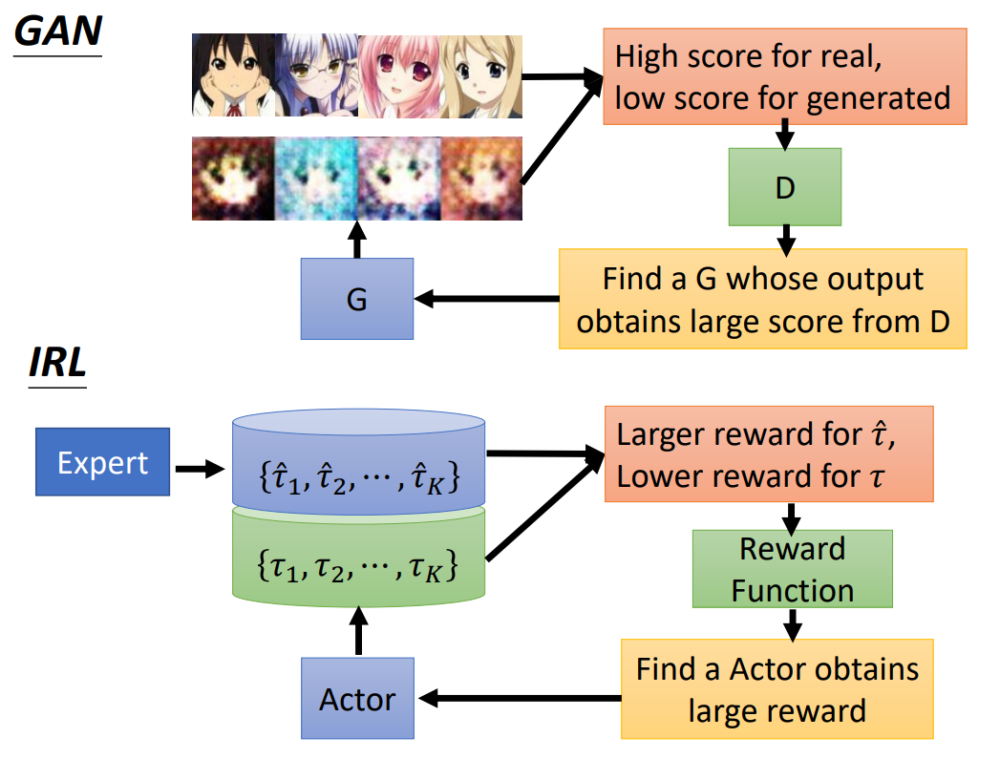

引言#
为什么需要强化学习#
在讨论什么是强化学习之前，我们先讨论为什么需要强化学习。在诸如图像分类等很多任务上，我们知道给模型某种输入，模型应该产生什么输出，但是如果是下围棋这样复杂的任务，也许我们可以通过让模型学习人类高手的棋谱学会一些章法，但是人类棋手下的棋也未必是当前形式下最好的招式。总之在连人类都不知道怎么做是最好的时候，我们可能需要强化学习。
强化学习中的要素#
强化学习的训练中一般有以下五个要素
- Actor：我们需要训练的模型（比如AlphaGo）
- Environment：任务的环境（在围棋中即轮到自己下棋时的棋局）
- Observation：某个时刻下Actor对环境的观察（AlphaGo以当前棋局作为输入，用于计算下一步怎么走）
- Action：Actor根据Observation做出的反应（AlphaGo计算出的下法）
- Reward：评判某一个Action的好坏
强化学习的过程#
在一般的机器学习中，可以分为三步
- 定义一个未知函数
- 定义损失函数
- 优化
虽然强化学习不同我们以前熟知的机器学习，但是大致步骤也类似于上面三步。
未知函数#
Deep Reinforcement Learning中，我们定义的函数也是一个神经网络，以space invader游戏为例，游戏画面作为输入，输出选择各个操作（向左移动、向右移动、开火）的概率分布，这相当于是做了一个分类任务。
优化目标#
在强化学习中，我们希望模型在全局而不仅仅是某一个局部中取得一个良好的效果，那么我们就应该把所有Action的reward相加，并以reward的和
比如在space invader游戏中，开火并消灭敌人能得到5分reward，左右移动得到0分reward。但是一直开火可能只能消灭一列上的敌人而无法得到最好的表现。所以应当以总的reward为优化目标，才能让模型学会在合适的时候左右移动。


优化#
Deep Reinforcement Learning中，优化是比较困难的问题，将在下一节展开讨论。
Policy Gradient#
本部分从如何“控制”模型的行为出发，最后总结policy gradient的方法。
假设我们知道每一步我们期待模型去采取的行为
那么这种情况下loss function
但是很多时候仅以±1来衡量希不希望模型做某个行为是不够的，所以对每一个行为
下面我们讨论如何产生合适的
Version 1（cumulated reward）的方法是让
Version 1的方法的问题在于它认为某一个步之前的所有步骤对这一个步之后reward的作用是均等的，而实际上比较符合直觉的是距离较远的步骤对当前步骤的reward的影响小，距离较近的步骤对当前步骤的reward影响大。所以Version 2改为用cumulated discount reward衡量行为优劣，即在求和时，式子改写为
Version 3是在cumulated discount reward的基础上对

最后，得到
实际上我们不知道模型应该采取怎样的行为，也不能这么计算loss，这样写只是便于理解，具体的数学推导参考Understanding deep learning 中对于Policy gradient的讲解。优化的目标和迭代表达式如下：
Actor-Critic#
Value function#
在Policy gradient中，每一轮训练我们都需要让模型“玩完整个游戏”，以此得到
第一种得到Value function的方法是Monte-Carlo（MC）方法，这个方法让模型随机地进行多次任务，然后训练得到Value function。
第二种方法是Temporal-difference（TD），这种方法利用
Value function的作用#
有了Value function后，我们可以改进"Version 3"中计算
但是Version 3.5中的方法没有考虑到某次行为之后的行为的随机性，这样可能导致误判这个行为的优劣，比如
Reward Shaping#
在很多任务中，只有任务结束的时候才会产生reward，而中间过程中没有reward（比如下围棋）。那么这时候我们需要在任务规则自带的reward（比如围棋胜负）之外额外构造一些reward。
比如https://openreview.net/forum?id=Hk3mPK5gg¬eId=Hk3mPK5gg中让模型学习玩枪战游戏，除了游戏规则本身的死亡和存活会产生reward，可以设置掉血、开火、待在原地（防止模型一动不动）、存活（防止模型学会边缘ob）会得到负reward，捡到血包或弹药、移动可以得到正的reward。
但是reward shaping需要人对任务本身有足够充分的了解，否则很难设置合理的reward。

No Reward: Learning from Demonstration#
在很多场景下，可能连reward都没有，同时人类也不知道如何设置合适的reward，那么可以让模型通过模仿来进行学习。
但是如果直接使用监督学习，那么人没有“教”模型的操作可能模型是学不会的。比如自动驾驶任务中，人无法穷尽所有的极端情况下的操作，那么自动驾驶汽车可能在极端条件下无法正确反应，这可能是致命的。
我们可以使用Inverse Reinforcement Learning的方法来解决这个问题。这个方法是在每一轮训练中同时收集人类和模型面对某种任务时的行为
可以把IRL的训练类比GAN的训练，模型看作generator，reward function看成discriminator。
作者: 核子